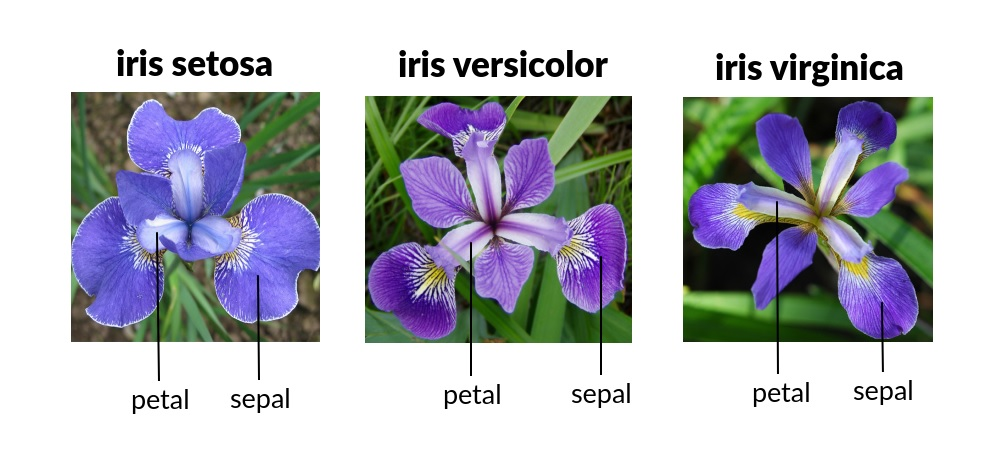

How Well do You Know the Different Iris Types?

There are many different types of iris.
Is it possible to distinguish between them based on their sepal and petal length and width?
A dataset of measurements for the three iris species in the above image was collected that can help you decide yourself.
Take a look at the scatterplot visualization to find patterns in the measurements! Feel free to change the axes of the scatterplot and omit/include the different species to find different patterns.